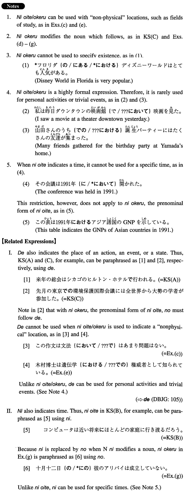

において/おける (I. 265)
- (ksa).
- 来年の総会はシカゴのヒルトン・ホテルにおいて行われる。
- Next year's general meeting will be held at the Hilton Hotel in Chicago.
- (ksb).
- コンピュータは近い将来においてほとんどの家庭に行き渡るだろう。
- Computers will probably spread to almost every household in the near future.
- (ksc).
- 先月の東京における環境保護国際会議には全世界から大勢の学者が参加した。
- Many scholars from all over the world took part in last month's international conference in Tokyo on environmental protection.
- (a).
- １９９２年のオリンピックはバルセロナにおいて開催された。
- The 1992 Olympiad was held in Barcelona.
- (b).
- 過去においてはこのようなことはあまり問題にならなかった。
- Such things were hardly considered to be problems before (literally: in the past).
- (c).
- この作文は文法においてはあまり問題はない。
- This composition doesn't have many problems in terms of grammar.
- (d).
- 本校における男女学生の比率は二対一である。
- The ratio of male students to female students at this school is 2 to 1.
- (e).
- 木村博士は遺伝学における権威者として知られている。
- Dr. Kimura is known as an authority in (the field of) genetics.
- (f).
- 過去五年間における彼の業績は実に素晴らしいものであった。
- His achievements during the past five years were truly remarkable.
- (g).
- 十月十二日における彼のアリバイは成立していない。
- His alibi on the twelfth of October has not been established.
